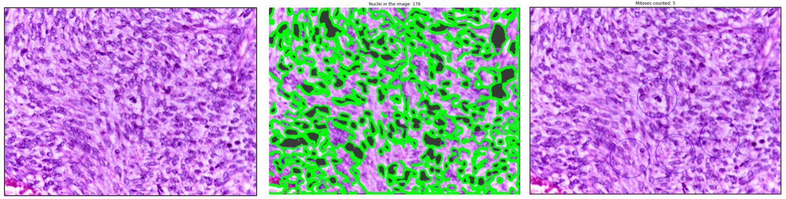
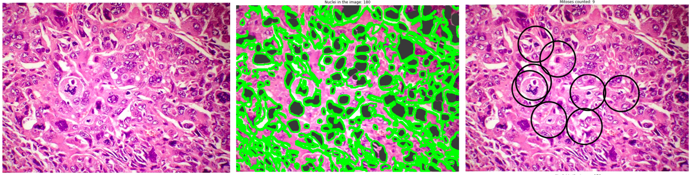
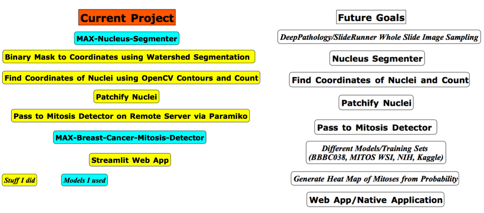

Mitosis
Counter
An IBM/MAX Breast Cancer Mitosis Detector
R-CNN Based Web App
Web App Demo
Example Output: Malignant spindle cell neoplasm
Interpretation and Results
Figure 1:Malignant spindle cell neoplasm, showing numerous mitotic figures, including atypical tripolar mitotic figure, in the centre. [H&E stain 40X]
SpCC shows moderate to poorly differentiated nonkeratinizing spindle cell lesion without clear margins. Cells are pleomorphic with large hyperchromatic nucleoli, prominent nucleoli and mitoses.
Threshold was set to 0.050. Model identified one tripolar mitotic figure while missing numerous other mitoses.
Image credit: Calicut Medical College, CC BY-SA 4.0 , via Wikimedia Commons
Page URL: https://commons.wikimedia.org/wiki/File:Malignant_spindle_cell_neoplasm_showing_mitotic_figures_40X.jpg
{kind=link}

Example Output: Matrix-producing metaplastic breast carcinoma
Interpretation and Results
Figure 2: Photomicrograph showing Infiltrating Ductal Carcinoma with marked nuclear pleomorphism and atypical mitotic figures (H&E 400X)
IDC featuring prominent matrix component and cystic breakdown shows poorly differentiated pleomorphic cells with eosinophilic cytoplasm, prominent nucleoli and abundant mitotic figures in absence of spindle cells.
Threshold was set to 0.050. Model identified one multipolar mitotic figure with other adjacent mitoses while ignoring many others. Notably atypical cell on the right mid margin is ignored. This illustrates a limited processing of boundary artefacts by the model.
Reference: Matrix-producing metaplastic breast carcinoma – a rare tumor with heterologous elements - Scientific Figure on ResearchGate. Available from: https://www.researchgate.net/figure/Photomicrograph-showing-IDC-with-marked-nuclear-pleomorphism-and-atypical-mitotic-figures_fig2_321934057 [accessed 14 Nov, 2023]
Page URL: https://www.researchgate.net/figure/Photomicrograph-showing-IDC-with-marked-nuclear-pleomorphism-and-atypical-mitotic-figures_fig2_321934057

About the App:
Stack and Workflow
Stack: Ubuntu Apache Streamlit Pipenv Docker Python3 OpenCV PIL Paramiko Scikit MatPlotLib Numpy Jupyter Notebook
MitoWeb is written entirely in python. Would recommend using Jupyter Notebook (mitoprog.ipynb file) for testing. Apache license applies. Source files available at:
mitoprogsf.py
mitoweb.py
mitoprog.ipynb
The artificial intelligence components have flask based web app interfaces. They were available from github IBM/MAX under an Apache license. Models run as docker containers while Streamlit is on a pipenv shell. The Streamlit framework passes user images to the Nucleus Segmenter. A JSON format binary mask is generated by the model and converted to an array.
This array is converted to an image, sent to Streamlit and passed to a function which performs watershed segmentation of the mask array and extracts pixel coordinates for the location of nuclei. The coordinates are used by a patch generating function to extract 64 by 64 pixel images of nuclei.
These patches are passed to the Mitosis Detection model and the probabilities of mitosis are saved alongside the coordinates. Finally, OpenCV is used to draw circles around the nuclei with a probability higher than the threshold and the final images is passed back to Streamlit.
Possible Improvements
This project was completed over 3 weeks of casual coding while doing my ART and Vascular surgery rotations. Most of this work was setting up servers, networking and getting the OpenCV to work well.
The goal of this project is to leverage AI's ability to do quantitative work and simple binary tasks reliably to improve physician efficiency. To that end, processing whole slides through a faster native app would be ideal. New mitosis counting models are generated every month. Incorporating the best models will help improve accuracy while optimization through the use of multi-stage containers, tensors and parallelization will make these tools practical.
Models and Licenses:
IBM/MAX Nucleus Segmenter
IBM/MAX Breast Cancer Mitosis Detector
Streamlit
